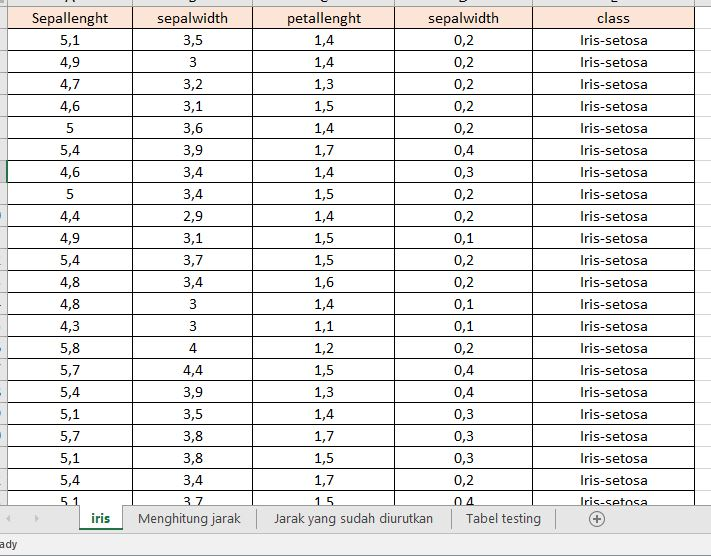
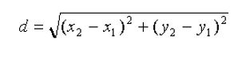
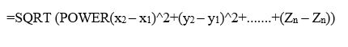
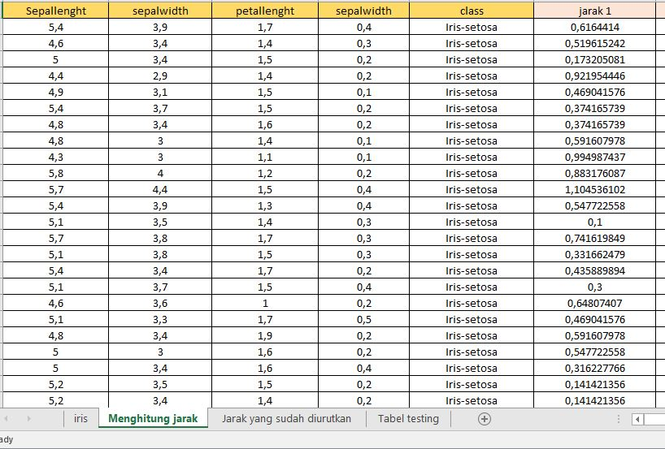
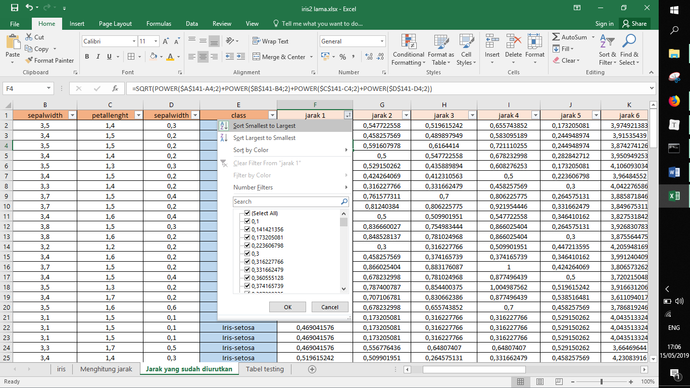
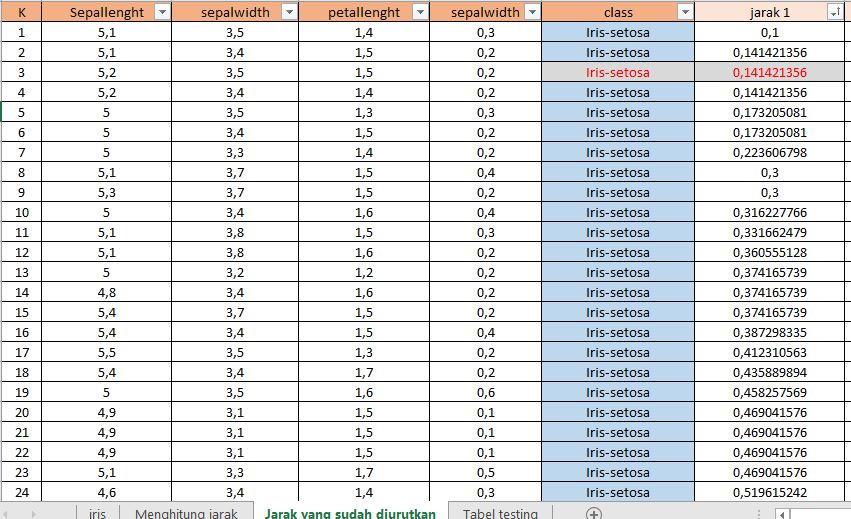

Konsep K-NN (K-Nearest Neighbor)¶
1. Definisi K-Nearest Neighbors¶
K-nearest neighbor (k-NN atau KNN) adalah sebuah metode atau algoritme untuk melakukan klasifikasi suatu data berdasarkan data pembelajaran (train data sets), yang diambil dari k tetangga terdekatnya (nearest neighbors). Dimana k merupakan banyaknya tetangga terdekat. Ketepatan algoritme k-NN ini sangat dipengaruhi oleh ada atau tidaknya fitur-fitur yang tidak relevan, atau jika bobot fitur tersebut tidak setara dengan relevansinya terhadap klasifikasi. Riset terhadap algoritme ini sebagian besar membahas bagaimana memilih dan memberi bobot terhadap fitur, agar performa klasifikasi menjadi lebih baik. Dekat atau jauhnya tetangga biasanya dihitung berdasarkan Euclidean Distance, atau dapat juga menggunakan rumus jarak yang lain.
Dalam mengklasifikasikan data baru, KNN ini perlu fakta/ data yang sudah ada yang digunakan sebagai data training sebagai acuan klasifikasi. KNN menjadi algoritma pembelajaran non-parametrik, maksudnya yaitu metode ini tidak menjadi sebuah asumsi tentang apa pun dengan data yang menjadi acuan klasifikasi. KNN menjadi sebuah fitur yang sangat berguna karena sebagian besar data dunia nyata tidak benar-benar mengikuti asumsi teoretis, misalnya: linear-separability, uniform distribution, dll.
Pembahasan pada halaman ini akan melihat bagaimana KNN dapat diimplementasikan dengan library "Scikit-Learn Python". Namun, kita juga perlu tahu bagaimana teori dari metode KNN ini beserta kelebihan dan kekurangannya.
2. Cara Kerja Algoritma K-Nearest Neighbors (KNN)¶
K-nearest neighbors melakukan klasifikasi dengan proyeksi data pembelajaran pada ruang berdimensi banyak. Ruang ini dibagi menjadi bagian-bagian yang merepresentasikan kriteria data pembelajaran. Setiap data pembelajaran direpresentasikan menjadi titik-titik c pada ruang dimensi banyak.
Klasifikasi Terdekat (Nearest Neighbor Classification)¶
Data baru yang diklasifikasi selanjutnya diproyeksikan pada ruang dimensi banyak yang telah memuat titik-titik c data pembelajaran. Proses klasifikasi dilakukan dengan mencari titik c terdekat dari c-baru (nearest neighbor). Teknik pencarian tetangga terdekat yang umum dilakukan dengan menggunakan formula jarak euclidean.
Teknik pencarian tetangga terdekat disesuaikan dengan dimensi data, proyeksi, dan kemudahan implementasi oleh pengguna.
Banyaknya k Tetangga Terdekat¶
Untuk menggunakan algoritma k nearest neighbors, perlu ditentukan banyaknya k tetangga terdekat yang digunakan untuk melakukan klasifikasi data baru. Banyaknya k, sebaiknya merupakan angka ganjil, misalnya k = 1, 2, 3, dan seterusnya. Penentuan nilai k dipertimbangkan berdasarkan banyaknya data yang ada dan ukuran dimensi yang dibentuk oleh data. Semakin banyak data yang ada, angka k yang dipilih sebaiknya semakin rendah. Namun, semakin besar ukuran dimensi data, angka k yang dipilih sebaiknya semakin tinggi.
3. Tahapan Algoritma Perhitungan K-NN¶
-
Bagi data menjadi data training dan data testing
-
Menentukan parameter K sebagai banyaknya jumlah tetangga terdekat dengan objek baru. Banyaknya k, sebaiknya merupakan angka ganjil, misalnya k = 1, 2, 3, dan seterusnya.
-
Menghitung jarak antar data baru terhadap semua data yang telah di training menggunakan jarak Euclidean. Rumus Euclidean Distance sebagai berikut :

-
Urutkan hasil perhitungan tersebut dengan data training secara ascending (berurutan dari nilai tinggi ke rendah) dan menentukan tetangga terdekat berdasarkan jarak minimum K
-
Mengumpulkan Klasifikasi nearest neighbor berdasarkan nilai k
-
Dengan menggunakan kategori nearest neighbor yang paling mayoritas atau frekuensi terbanyak maka dapat diprediksikan sebagai hasil klasifikasi data baru.
4. Kelebihan dan Kekurangan dari Algoritma K-NN¶
Kelebihan :
- Mudah dipahami dan diimplementasikan
Untuk mengklasifikasi instance x menggunakan kNN, kita cukup mendefinisikan fungsi untuk menghitung jarak antar-instance, menghitung jarak x dengan semua instance lainnya berdasarkan fungsi tersebut, dan menentukan kelas x sebagai kelas yang paling banyak muncul dalam k instance terdekat.
-
Lebih efektif di data training yang besar
-
Dapat menghasilkan data yang lebih akurat
Kekurangan :
-
Perlu ditentukan nilai k yang paling optimal yang menyatakan jumlah tetangga terdekat
-
Biaya komputasi cukup tinggi karena perhitungan jarak harus dilakukan pada setiap query instance bersama-sama dengan seluruh instan dari training sample
¶
Langkah Perhitungan K-Nearest Neighbors Di Excell¶
Berikut adalah sebagian datanya :

[ LANGKAH 1 ]
Dari data Iris ambilah data testing. Disini data testing diambil sebanyak 15 data, 5 dari class iris-setosa, 5 dari iris-versicolor, dan 5 dari data iris-virginica. Pisahkan 15 data testing dan data hasil pengurangan masing-masing 15 dan 135 data. Berikut adalah data testing yang diambil :

[ LANGKAH 2 ]**
Menghitung kuadrat jarak eucliden objek terhadap data training yang diberikan. Jarak dihitung dari 15 data testing terhadap 135 data dari hasil pengurangan, menggunakan rumus berikut :

Dalam Microsoft Excel menggunakan rumus sebagai berikut :
| =SQRT (POWER(x2 – x1)^2+(y2 – y1)^2+.......+(Zn – Zn)) |
Penerapan di excel :


[ LANGKAH 3 ]
Mengurutkan data pada tahap 2 secara ascending :

[ LANGKAH 4]
Klasifikasi nearest neighbor berdasarkan nilai k. Nilai k ditentukan sebanyak data sisa hasil pengurangan yakni 135 data. Menggunakan kategori nearest neighbor, dengan melihat dari class yang paling mayoritas, maka dapat diprediksikan class pada objek tersebut. Misalnya, dengan menggunakan sampel data tersebut kita menentukan K=3 dari jarak 1 maka hasil cluster pada objek pengurutan adalah iris-setosa karena mayoritas class pada K=3 tersebut adalah iris-setosa.

IMPLEMENTASI PROGRAM¶
Pada bagian ini, membahas bagaimana implementasi algoritma k-nearest neighbors dengan Scikit-Learn Python. Kita akan menggunakan dataset iris yang terkenal untuk contoh KNN ini. Dataset terdiri dari empat atribut: sepal-width, sepal-length, petal-width dan petal-length. Ini adalah atribut dari jenis spesifik tanaman iris. Fungsinya adalah untuk memprediksi kelas tanaman ini. Ada tiga kelas dalam dataset: Iris-setosa, Iris-versicolor dan Iris-virginica. Rincian lebih lanjut dari dataset tersedia di sini.
Berikut langkah-langkah implementasi KNN:
Mengimpor Library python¶
Hal pertama yang kita lakukan untuk membuat program prediksi menggunakan metode KNN di python. Terlebih dahulu kita harus import beberapa library yang nantinya diperlukan dalam program ini antara lain import pandas dan sklearn. Library pandas akan kita gunakan untuk mengambil data Iris kita sedangkan sklearn sebagai library yang mempunyai fungsi Kneighbors yang kita butuhkan nantinya. Berikut kode programnya :
import pandas as pd from sklearn.neighbors import KNeighborsClassifier from sklearn import model_selection from sklearn.model_selection import train_test_split
Mengambil Dataset¶
Selanjutnya kita akan mengambil dataset iris kita, caranya adalah dengan menggunakan library pandas yang telah kita import sebelumnya. Berikut kodenya :
df=pd.read_csv('Iris.csv')
Pada kode diatas tertulis pd.read_csv , bukan pandas.read_csv karena sebelumnya kita mengimpor pandas sebagai pd sehingga saat kita ingin menggunakan pandas kita hanya perlu mengetik pd saja.
Inisiasi Kneighbors Classifier¶
Setelah data sudah ada, kita harus menginisiasi fungsi dari Kneighbors sendiri. Disini kita akan memasukkan fungsi KNN kedalam variabel clf sehingga nantinya saat kita memerlukannya kita hanya perlu memanggil variabel clf saja. Adapun maksud dri n_neighbors=3 dibawah adalah untuk mendefinisikan jumlah tetangga.
clf=KNeighborsClassifier(n_neighbors=3)
Split Dataset¶
Perlu diketahui, saat kita menggunakan program prediksi dengan data training dan data testing yang sama, maka hasilnya tidak akan terlihat optimal. Oleh karena itu kita akan membagi dataset menjadi dua bagian, yaitu satu untuk data training dan satu untuk data testing. Untuk membagi dataset menjadi data training dan data testing dalam program, jalankan kode berikut:
# Dataset validasi dataset array = df.values X = array[:,1:5] Y = array[:,5] # Sepertiga data sebagai bagian dari set tes validation_size = 15 seed = 7 X_train, X_validation, Y_train, Y_validation = model_selection.train_test_split(X, Y, test_size=validation_size, random_state=seed) #Menyesuaikan set training clf.fit(X_train, Y_train)
Buat File Prediksi¶
Setelah semua persiapan selesai, saatnya kita membuat prediksi menggunakan fungsi Kneighbors dalam python. Erikut syntax programnya :
#Predicting untuk Set Tes
pred_clf = clf.predict(X_validation
pred_clf_df = pd.DataFrame(pred_clf.reshape(15,1))
#Ganti nama kolom untuk menunjukkan prediksi
pred_clf_df.rename(columns={0:'Prediction'}, inplace=True)
#membentuk kembali dataset uji
X_validation_df = pd.DataFrame(X_validation.reshape(15 ,4))
#menggabungkan dua bingkai data panda di atas kolom untuk membuat dataset prediksi
pred_outcome = pd.concat([X_validation_df, pred_clf_df], axis=1, join_axes=[X_validation_df.index])
pred_outcome.rename(columns = {0:'SepalLengthCm', 1:'SepalWidthCm', 2:'PetalLengthCm', 3:'PetalWidthCm'}, inplace=True)
del df['Id']
#menggabungkan prediksi dengan dataset asli
pred_comp = pd.merge(df,pred_outcome, on=['SepalLengthCm','SepalWidthCm','PetalLengthCm','PetalWidthCm'])
pada syntax program diatas, kita menjalankan fungsi Kneighbors pada syntax clf.predict. dan kemudian membuat sebuah model dataframe dengan 15 baris dan 1 kolom. Dataframe ini akan digunakan untuk menyimpan data hasil prediksi agar bisa di cetak nantinya. Lalu setelah itu menggabungkannya dengan data asli agar bisa ditampilkan perbedaan antara data asli dengan hasil prediksi.
Menampilkan Data Hasil Prediksi¶
Setelah dataframe selesai dibuat maka hal selanjutnya yang dilakukan adalah menampilkannya. Berikut syntaxnya :
print((pred_comp).head(15))
Membuat Prediksi Untuk Inputan nilai baru diluar dataset¶
Sampai saat ini, prediksi yang dilakukan masih sebatas data yang ada pada dataset iris. Agar kita bisa menguji data lain selain yang ada pada data testing ketikkan kode berikut :
sl = input('Enter sepal length (cm): ')
sw = input('Enter sepal width (cm): ')
tl = input('Enter tepal length (cm): ')
tw = input('Enter tepal width (cm): ')
dataClass = clf.predict([[sl,sw,tl,tw]])
print ("\n")
print('Prediction: '), dataClass
hasil dari syntax program diatas adalah sebuah prediksi dari data yang diinputkan. Dengan ini program prdiksi menggunakan metode Kneighbors kita sudah selesai.
¶
Referensi¶
- Mayu Shinohara. 2017. Hyper Parameters Tuning of DTree,RF,SVM,kNN di https://www.kaggle.com/mayu0116/hyper-parameters-tuning-of-dtree-rf-svm-knn
- informatika. 2017. Algoritma K-Nearest Neighbor (K-NN) di https://informatikalogi.com/algoritma-k-nn-k-nearest-neighbor/
- Asep Maulana Ismail. 2018. Cara Kerja Algoritma k-Nearest Neighbor (k-NN) di https://medium.com/bee-solution-partners/cara-kerja-algoritma-k-nearest-neighbor-k-nn-389297de543e